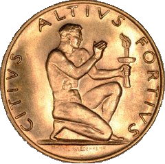

The modern Olympic Games are the leading international sporting event featuring summer and winter sports competitions in which thousands of athletes from around the world participate in a variety of competitions. The Olympic Games are considered to be the world's foremost sports competition with more than 200 nations participating. The Olympic Games are held every four years, with the Summer and Winter Games alternating by occurring every four years but two years apart. Their creation was inspired by the ancient Olympic Games, which were held in Olympia, Greece, from the 8th century BC to the 4th century AD. Baron Pierre de Coubertin founded the International Olympic Committee (IOC) in 1894. The IOC is the governing body of the Olympic Movement, with the Olympic Charter defining its structure and authority.
 The evolution of the Olympic Movement during the 20th and 21st centuries has resulted in several changes to the Olympic Games. Some of these adjustments include the creation of the Winter Olympic Games for ice and winter sports, the Paralympic Games for athletes with a disability, and the Youth Olympic Games for teenage athletes. The IOC has had to adapt to a variety of economic, political, and technological advancements. As a result, the Olympics has shifted away from pure amateurism, as envisioned by Coubertin, to allowing participation of professional athletes. The growing importance of mass media created the issue of corporate sponsorship and commercialization of the Games. World wars led to the cancellation of the 1916, 1940, and 1944 Games. Large boycotts during the Cold War limited participation in the 1980 and 1984 Games.
The Olympic Movement consists of international sports federations (IFs), National Olympic Committees (NOCs), and organizing committees for each specific Olympic Games. As the decision-making body, the IOC is responsible for choosing the host city for each Games, and organizes and funds the Games according to the Olympic Charter. The IOC also determines the Olympic program, consisting of the sports to be contested at the Games. There are several Olympic rituals and symbols, such as the Olympic flag and torch, as well as the opening and closing ceremonies. Over 13,000 athletes compete at the Summer and Winter Olympic Games in 33 different sports and nearly 400 events. The first, second, and third-place finishers in each event receive Olympic medals: gold, silver, and bronze, respectively.
The Games have grown so much that nearly every nation is now represented. This growth has created numerous challenges and controversies, including boycotts, doping, bribery, and a terrorist attack in 1972. Every two years the Olympics and its media exposure provide unknown athletes with the chance to attain national and sometimes international fame. The Games also constitute an opportunity for the host city and country to showcase themselves to the world.